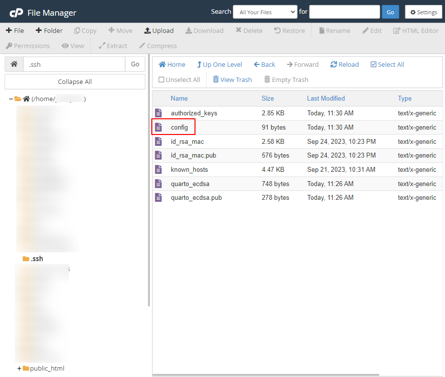

Hosting private Quarto repo on GitHub and publishing the website on custom domain with cPanel
Overview
I’ve been a little bit obsessed with Quarto since I discovered it, and I am exploring the possibilities of replacing WordPress with Quarto. Obviously, WordPress is way more than just a publishing system, but I mostly use it to write and share. Also, I am getting frustrated with Elementor editor, and I cannot comprehend CSS layout to save my own life. Quarto, for my usage, seems to be the perfect candidate. It provides me great flexibility, particularly in styling, without the burden of specifying everything. That’s great for me because I love switching out fonts and colors, but I do not want to figure out layout for desktop and mobile.

What you’ll need
- Custom domain — I purchased my domains through Namecheap. If you are not looking to host your Quarto website on custom domain, this post is not for you. Please review the Publishing Basics in which Quarto listed several free options to host a site under a branded domain.
- Hosting — I have the Stellar Shared Hosting plan through Namecheap, which uses cPanel. I already paid for the service, so I am trying to figure this out. Again, if you’re not looking to self-host-ish the website, this post is not for you. You can host the website on GitHub Pages and use custom domains for your page.
For WordPress, after installing via cPanel, everything was done on a browser, and all data is stored somewhere in cPanel. For Quarto, my plan is
- host Quarto website project on GitHub as a private repository,
- edit on my laptop with VS Code or RStudio and render to HTML and sync the changes to GitHub,
- clone the repo to cPanel, and
- publish on custom domain by setting up document root at the rendered output directory of the project.
Once setup, whenever I make edits and syncs to GitHub, I will need to update the repo in cPanel through git.
Creating a key on cPanel
Using Terminal
If Terminal is not available, follow the steps in How to enable SSH (Shell) in cPanel (help article is from Namecheap but should be the same for other hosting provider).
ssh-keygen -t ecdsa -b 521 -C "EMAIL" -f ~/.ssh/KEYFILEssh-keygen(red underline) is the command-t ecdsa(pink underline) specifies the type to beecdsa. I cannot recall the reason I chose this one, but it happened to work. To see other key type accepted, see Improving Git protocol security on GitHub.-b 521(yellow underline) specifies the bits to be521-C "EMAIL"(green underline) specifies a comment to add to your public key, enclosed in double quotes. This is helpful when identifying which public keys you have authorized in a remote system, so it is common practice to add your email address as the comment.-f ~/.ssh/KEYFILE(blue underline) is the name for the keys. With the-fflag, there is no need to specify the public key name as it will always be the same name as the private key, but with.pubas the suffix.
See ssh-keygen man page for more options, but the ones listed above were all I needed.
ssh-keygen outputAfter running this command, the system will prompt you to enter a passphrase, but I usually just hit Enter to not set a passphrase (purple box). Finally, terminal shows output (olive? box), including path to private key and public key, fingerprint, and randomart image.
Using UI
If accessing terminal is not possible, you can still generate keys through UI. However, this approach provides fewer key type/size and requires key password. Follow the steps in How to connect via SSH using keys.
Adding the key to GitHub
From the repository, click Settings, click Deploy Keys on the sidebar, then click Add keys. In the Key textbox, paste the public key copied from the last step. Toggle Allow write access if needed.
Testing connection on cPanel
Use the following command to see whether it worked:
ssh -T git@github.comIf not, like the output from the screenshot, you can add -i ~/.ssh/KEYFILE to specify which keyfile to use.
ssh -T git@github.com -i ~/.ssh/KEYFILECloning the repository
Although cPanel has a Git™ Version Control option, allowing users to set up repositories via UI, it does not work for private repo. To clone a private repository, you must use the SSH protocol rather than the Git or HTTPS protocols.
Copy the SSH key from GitHub, launch terminal from cPanel, and type git clone then paste the SSH Key. The entire command should look like:
git clone git@github.com:USERNAME/REPO_NAME.gitFor example:
git clone git@github.com:yuenhsu/website-quarto.gitCongrats! The repository is now cloned to cPanel.
Pointing domain to rendered output
Directory for rendered output is configured with output-dir. Since I did not specify, the default directory is _site. From cPanel domains, click Manage on the target domain, and update the document root to REPO_NAME/_site.
Checking the URL
Give it a few minutes then visit the URL.
If it works, congrats! If it doesn’t, keep reading. To update, push the changes to GitHub then run git pull on cPanel terminal. You can even switch between branches. As long as the rendered output is at the document root, everything should work.
Troubleshooting
Git error code 128

If you are seeing the error message shown in the symptoms section above, you must use the SSH protocol rather than the Git or HTTPS protocols. The URLs that your Git provider gives you to use for the SSH protocol might start with ssh://, or for example in the case of Github, will just start with a username: git@.
In short, private repository cannot be cloned this way. Follow the steps in Section 6 to clone with SSH protocol.
Permission denied (publickey)
ssh-add ~/.ssh/KEYFILERun the command to add the keyfile. If any error, start ssh agent first:
eval `ssh-agent -s`Could not open a connection to your authentication agent
Becuase the ssh agent was not started. Run the following command to start:
eval `ssh-agent -s`Creating a config file
From File Manager, navigate to .ssh folder. If there is no config file, create one and change permissions to 0600 (User Read and Write are checked and all others unchecked.)

.ssh folderconfig file permission settingEdit the file and paste the following content with correct info:
- 1
-
Replace
REPOwith repository name. - 2
- As is
- 3
-
Replace
KEYFILEwith key filename to private key, that is, without.pubsuffix.
For example:
Host github.com-website-quarto
Hostname github.com
IdentityFile=~/.ssh/quarto_ecdsa